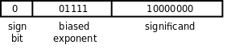

第 14 章 计算机中数的表示
1. 为什么计算机用二进制计数
人类的计数方式通常是「逢十进一」，称为十进制（Decimal），大概因为人有十个手指，所以十进制是最自然的计数方式，很多民族的语言文字中都有十个数字，而阿拉伯数字 0 ~ 9 是目前最广泛采用的。
计算机是用数字电路搭成的，数字电路中只有 1 和 0 两种状态，或者可以说计算机只有两个手指，所以对计算机来说二进制（Binary）是最自然的计数方式。根据「逢二进一」的原则，十进制的 1、2、3、4 分别对应二进制的 1、10、11、100。二进制的一位数字称为一个位（Bit），三个 bit 能够表示的最大的二进制数是 111，也就是十进制的 7。不管用哪种计数方式，数的大小并没有变，十进制的 1+1 等于 2，二进制的 1+1 等于 10，二进制的 10 和十进制的 2 大小是相等的。事实上，计算机采用如下的逻辑电路计算两个 bit 的加法：
图 14.1. 1-bit Full Adder

图的上半部分（出自Wikipedia）的电路称为一位全加器（1-bit Full Adder），图的下半部分是一些逻辑电路符号的图例。我们首先解释这些图例，逻辑电路由门电路（Gate）和导线（Wire）组成，同一条导线上在某一时刻的电压值只能是高和低两种状态之一，分别用 0 和 1 表示。如果两条导线短接在一起则它们的电压值相同，在接点处画一个黑点，如果接点处没有画黑点则表示这两条线并没有短接在一起，只是在画图时无法避免交叉。导线的电压值进入门电路的输入端，经过逻辑运算后在门电路的输出端输出运算结果的电压值，任何复杂的加减乘除运算都可以分解成简单的逻辑运算。AND、OR 和 NOT 运算在第 4 章第 3 节「布尔代数」中讲过了，这三种逻辑运算分别用与门、或门和反相器（Inverter）实现。另外几种逻辑运算在这里补充一下。异或（XOR，eXclusive OR）运算的真值表如下：
表 14.1. XOR 的真值表
| A | B | A XOR B |
|---|---|---|
| 0 | 0 | 0 |
| 0 | 1 | 1 |
| 1 | 0 | 1 |
| 1 | 1 | 0 |
用一句话概括就是：两个操作数相同则结果为 0，两个操作数不同则结果为 1。与非（NAND）和或非（NOR）运算就是在与、或运算的基础上取反：
表 14.2. NAND 的真值表
| A | B | A NAND B |
|---|---|---|
| 0 | 0 | 1 |
| 0 | 1 | 1 |
| 1 | 0 | 1 |
| 1 | 1 | 0 |
表 14.3. NOR 的真值表
| A | B | A NOR B |
|---|---|---|
| 0 | 0 | 1 |
| 0 | 1 | 0 |
| 1 | 0 | 0 |
| 1 | 1 | 0 |
如果把与门、或门和反相器组合来实现 NAND 和 NOR 运算，则电路过于复杂了，因此逻辑电路中通常有专用的与非门和或非门。现在我们看看上图中的 AND、OR、XOR 是怎么实现两个 bit 的加法的。A、B 是两个加数，Cin 是低位传上来的进位（Carry），相当于三个加数求和，三个加数都是 0则结果为 0，三个加数都是 1 则结果为 11，即输出位 S 是 1，产生的进位 Cout 也是 1。下面根据加法的规则用真值表列出所有可能的情况：
表 14.4. 1-bit Full Adder 的真值表
| A | B | Cin | Cout | S |
|---|---|---|---|---|
| 0 | 0 | 0 | 0 | 0 |
| 0 | 0 | 1 | 0 | 1 |
| 0 | 1 | 0 | 0 | 1 |
| 0 | 1 | 1 | 1 | 0 |
| 1 | 0 | 0 | 0 | 1 |
| 1 | 0 | 1 | 1 | 0 |
| 1 | 1 | 0 | 1 | 0 |
| 1 | 1 | 1 | 1 | 1 |
请读者对照电路图验证一下真值表是否正确。如果把很多个一位全加器串接起来，就成了多位加法器，如下图所示（该图出自 Wikipedia）：
图 14.2. 4-bit Ripple Carry Adder

图中的一位全加器用方框表示，上一级全加器的 Cout 连接到下一级全加器的 Cin，让进位像涟漪一样一级一级传开，所以叫做 Ripple Carry Adder，这样就可以把两个 4 bit 二进制数 A3A2A1A0 和 B3B2B1B0 加起来了。在这里介绍 Ripple Carry Adder 只是为了让读者理解计算机是如何通过逻辑运算来做算术运算的，实际上这种加法器效率很低，只能加完了一位再加下一位，更实用、更复杂的加法器可以多个位一起计算，有兴趣的读者可参考数字逻辑基础。
2. 不同进制之间的换算
在十进制中，个位的 1 代表 100 = 1，十位的 1 代表 101=10，百位的 1 代表 102=100，所以
123 = 1×102+2×101+3×100
同样道理，在二进制中，个位的 1 代表 20=1，十位的 1 代表21=2，百位的 1 代表 22=4，所以
(A3A2A1A0)2 = A3×23 + A2×22 + A1×21 + A0×20
如果二进制和十进制数出现在同一个等式中，为了区别我们用 (A3A2A1A0)2 这种形式表示 (A3A2A1A0) 是二进制数，每个数字只能是 0 或 1，其它没有套括号加下标的数仍表示十进制数。对于 (A3A2A1A0)2 这样一个二进制数，最左边的 A3 位称为最高位（MSB，Most Significant Bit），最右边的 A0 位称为最低位（LSB，Least Significant Bit）。以后我们遵循这样的惯例：LSB 称为第 0 位而不是第 1 位，所以如果一个数是 32 位的，则 MSB 是第 31 位。上式就是从二进制到十进制的换算公式。作为练习，请读者算一下 (1011)2 和 (1111)2 换算成十进制分别是多少。
下面来看十进制怎么换算成二进制。我们知道
13 = 1×23 + 1×22 + 0×21 + 1×20
所以 13 换算成二进制应该是 (1101)2。问题是怎么把 13 分解成等号右边的形式呢？注意到等号右边可以写成
13 = ((((0×2 + 13)×2 + 12)×2 + 01)×2 + 10)
我们将 13 反复除以 2 取余数就可以提取出上式中的 1101 四个数字，为了让读者更容易看清楚是哪个 1 和哪个 0，上式和下式中对应的数字都加了下标：
13÷2 = 6...10 6÷2 = 3...01 3÷2 = 1...12 1÷2 = 0...13
把这四步得到的余数按相反的顺序排列就是 13 的二进制表示，因此这种方法称为除二反序取余法。
计算机用二进制表示数，程序员也必须习惯使用二进制，但二进制写起来太啰嗦了，所以通常将二进制数分成每三位一组或者每四位一组，每组用一个数字表示。比如把 (10110010)2 从最低位开始每三位分成一组，10、110、010，然后把每组写成一个十进制数字，就是 (262)8，这样每一位数字的取值范围是 0 ~ 7，逢八进一，称为八进制（Octal）。类似地，把 (10110010)2 分成每四位一组，1011、0010，然后把每组写成一个数字，这个数的低位是 2，高位已经大于 9 了，我们规定用字母 A ~ F 表示 10 ~ 15，这个数可以写成 (B2)16，每一位数字的取值范围是 0 ~ F，逢十六进一，称为十六进制（Hexadecimal）。所以，八进制和十六进制是程序员为了书写二进制方便而发明的简便写法，好比草书和正楷的关系一样。
习题
-
二进制小数可以这样定义：
(0.A1A2A3...)2 = A1×2-1 + A2×2-2 + A3×2-3 + ...
这个定义同时也是从二进制小数到十进制小数的换算公式。从本节讲的十进制转二进制的推导过程出发类比一下，十进制小数换算成二进制小数应该怎么算？
-
再类比一下，八进制（或十六进制）与十进制之间如何相互换算？
3. 整数的加减运算
我们已经了解了计算机中正整数如何表示，加法如何计算，那么负数如何表示，减法又如何计算呢？本节讨论这些问题。为了书写方便，本节举的例子都用 8 个 bit 表示一个数，实际计算机做整数加减运算的操作数可以是 8 位、16 位、32 位甚至64 位的。
3.1. Sign and Magnitude 表示法
要用 8 个 bit 表示正数和负数，一种简单的想法是把最高位规定为符号位（Sign Bit），0 表示正 1 表示负，剩下的 7 位表示绝对值的大小，这称为 Sign and Magnitude 表示法。例如 -1 表示成10000001，+1 表示成 00000001。这样用 8 个 bit 表示整数的取值范围是 -27-1 ~ 27-1，即 -127 ~ 127。
采用这种表示法，计算机做加法运算需要处理以下逻辑：
- 如果两数符号位相同，就把它们的低 7 位相加，符号位不变。如果低 7 位相加时在最高位产生进位，说明结果的绝对值大于 127，超出 7 位所能表示的数值范围，这称为溢出（Overflow）[24]，这时通常把计算机中的一个标志位置 1 表示当前运算产生了溢出。
- 如果两数符号位不同，首先比较它们的低 7 位谁大，然后用大数减小数，结果的符号位和大数相同。
[24] 有时候会进一步细分，把正整数溢出称为上溢（Overflow），负整数溢出称为下溢（Underflow），详见
strtol(3)。
那么减法如何计算呢？由于我们规定了负数的表示，可以把减法转换成加法来计算，要计算 a-b，可以先把 b 变号然后和 a 相加，相当于计算 a + (-b)。但如果两个加数的符号位不同就要用大数的绝对值减小数的绝对值，这一步减法计算仍然是免不了的。我们知道加法要进位，减法要借位，计算过程是不同的，所以除了要有本章第 1 节「为什么计算机用二进制计数」提到的加法器电路之外，还要另外有一套减法器电路。
如果采用 Sign and Magnitude 表示法，计算机做加减运算需要处理很多逻辑：比较符号位，比较绝对值，加法改减法，减法改加法，小数减大数改成大数减小数……这是非常低效率的。还有一个缺点是 0 的表示不唯一，既可以表示成 10000000 也可以表示成 00000000，这进一步增加了逻辑的复杂性，所以我们迫切需要重新设计整数的表示方法使计算过程更简单。
3.2. 1's Complement 表示法
本节介绍一种二进制补码表示法，为了便于理解，我们先看一个十进制的例子：
167 - 52 = 167 + (-52) = 167 + (999-52) - 1000 + 1 = 167+ 947 - 1000 + 1 = 1114 - 1000 + 1 = 114 + 1 = 115
167 - 52 --> 减法转换成加法 167 + (-52) --> 负数取 9 的补码表示 167 + 947 --> 114 进 1 --> 高位进的 1 加到低位上去，结果为 115。
在这个例子中我们用三位十进制数字表示正数和负数，具体规定如下：
表 14.5. 9's Complement 表示法
| 数值 | 补码表示 |
|---|---|
| -499 | 500 |
| -498 | 501 |
| ... | ... |
| -1 | 998 |
| 0 | 999 |
| 0 | 0 |
| 1 | 1 |
| ... | ... |
| 498 | 498 |
| 499 | 499 |
首先 -52 要用 999-52 表示，就是 947，这称为取 9 的补码（9's Complement）；然后把 167 和 947 相加，得到 114 进 1；再把高位进的 1 加到低位上去，得 115，本来应该加 1000，结果加了 1，少加了 999，正好把先前取 9 的补码多加的 999 抵消掉了。我们本来要做 167-52 的减法运算，结果变成做 999-52 的减法运算，后者显然要容易一些，因为没有借位。这种补码表示法的计算规则用一句话概括就是：负数用 9 的补码表示，减法转换成加法，计算结果的最高位如果有进位则要加回到最低位上去。要验证这条规则得考虑四种情况：
- 两个正数，相加得正
- 一正一负，相加得正
- 一正一负，相加得负
- 两个负数，相加得负
我们举的例子验证了第二种情况，另外三种情况请读者自己验证，暂时不考虑溢出的问题，稍后会讲到如何判定溢出。
上述规则也适用于二进制：负数用 1 的补码（1's Complement）表示，减法转换成加法，计算结果的最高位如果有进位则要加回到最低位上去。取 1 的补码更简单，连减法都不用做，因为 1-1=0，1-0=1，取 1 的补码就是把每个 bit 取反，所以 1 的补码也称为反码。比如：
00001000 - 00000100 → 00001000 + (-00000100) → 00001000 + 11111011 → 00000011 进 1 → 高位进的 1 加到低位上去，结果为 00000100
1's Complement 表示法相对于 Sign and Magnitude 表示法的优势是非常明显的：不需要把符号和绝对值分开考虑，正数和负数的加法都一样算，计算逻辑更简单，甚至连减法器电路都省了，只要有一套加法器电路，再有一套把每个 bit 取反的电路，就可以做加法和减法运算。如果 8 个 bit 采用 1's Complement 表示法，负数的取值范围是从 10000000 到 11111111（-127 ~ 0），正数是从 00000000 到 01111111（0 ~ 127），仍然可以根据最高位判断一个数是正是负。美中不足的是 0 的表示仍然不唯一，既可以表示成 11111111 也可以表示成 00000000，为了解决这最后一个问题，我们引入 2's Complement 表示法。
3.3. 2's Complement 表示法
2's Complement 表示法规定：正数不变，负数先取反码再加 1。如果 8 个 bit 采用 2's Complement 表示法，负数的取值范围是从 10000000 到 11111111（-128 ~ -1），正数是从 00000000 到 01111111（0 ~ 127），也可以根据最高位判断一个数是正是负，并且 0 的表示是唯一的，目前绝大多数计算机都采用这种表示法。为什么称为「2的补码」呢？因为对一位二进制数 b 取补码就是 1-b+1 = 10-b，相当于从 2 里面减去 b。类似地，要表示 -4 需要对 00000100 取补码，11111111 - 00000100 + 1 = 100000000 - 00000100，相当于从 28 里面减去 4。2's Complement 表示法的计算规则有些不同：减法转换成加法，忽略计算结果最高位的进位，不必加回到最低位上去。请读者自己验证上一节提到的四种情况下这条规则都能算出正确结果。
8 个 bit 采用 2's Complement 表示法的取值范围是 -128 ~ 127，如果计算结果超出这个范围就会产生溢出，例如：
图 14.3. 有符号数加法溢出

如何判断产生了溢出呢？我们还是分四种情况讨论：如果两个正数相加溢出，结果一定是负数；如果两个负数相加溢出，结果一定是正数；一正一负相加，无论结果是正是负都不可能溢出。
图 14.4. 如何判定溢出

从上图可以得出结论：在相加过程中最高位产生的进位和次高位产生的进位如果相同则没有溢出，如果不同则表示有溢出。逻辑电路的实现可以把这两个进位连接到一个异或门，把异或门的输出连接到溢出标志位。
3.4. 有符号数和无符号数
前面几节我们用 8 个 bit 表示正数和负数，讲了三种表示法，每种表示法对应一种计算规则，这称为有符号数（Signed Number）；如果 8 个 bit 全部表示正数则取值范围是 0 ~ 255，这称为无符号数（Unsigned Number）。其实计算机做加法时并不区分操作数是有符号数还是无符号数，计算过程都一样，比如上面的例子也可以看作无符号数的加法：
图 14.5. 无符号数加法进位

如果把这两个操作数看作有符号数 -126 和 -8 相加，计算结果是错的，因为产生了溢出；但如果看作无符号数 130 和 248 相加，计算结果是 122 进 1，也就是 122 + 256，这个结果是对的。计算机的加法器在做完计算之后，根据最高位产生的进位设置进位标志，同时根据最高位和次高位产生的进位的异或设置溢出标志。至于这个加法到底是有符号数加法还是无符号数加法则取决于程序怎么理解了，如果程序把它理解成有符号数加法，下一步就要检查溢出标志，如果程序把它理解成无符号数加法，下一步就要检查进位标志。通常计算机在做算术运算之后还可能设置另外两个标志，如果计算结果的所有 bit 都是零则设置零标志，如果计算结果的最高位是 1 则设置负数标志，如果程序把计算结果理解成有符号数，也可以检查负数标志判断结果是正是负。
4. 浮点数
浮点数在计算机中的表示是基于科学计数法（Scientific Notation）的，我们知道 32767 这个数用科学计数法可以写成 3.2767×104，3.2767 称为尾数（Mantissa，或者叫 Significand），4 称为指数（Exponent）。浮点数在计算机中的表示与此类似，只不过基数（Radix）是 2 而不是 10。下面我们用一个简单的模型来解释浮点数的基本概念。我们的模型由三部分组成：符号位、指数部分（表示 2 的多少次方）和尾数部分（小数点前面是 0，尾数部分只表示小数点后的数字）。
图 14.6. 一种浮点数格式

如果要表示 17 这个数，我们知道 17 = 17.0×100 = 0.17×102，类似地，17 = (10001)2×20 = (0.10001)2×25，把尾数的有效数字全部移到小数点后，这样就可以表示为：
图 14.7. 17 的浮点数表示

如果我们要表示 0.25 就遇到新的困难了，因为 0.25 = 1×2-2 = (0.1)2×2-1，而我们的模型中指数部分没有规定如何表示负数。我们可以在指数部分规定一个符号位，然而更广泛采用的办法是使用偏移的指数（Biased Exponent）。规定一个偏移值，比如 16，实际的指数要加上这个偏移值再填写到指数部分，这样比 16 大的就表示正指数，比 16 小的就表示负指数。要表示 0.25，指数部分应该填 16-1 = 15：
图 14.8. 0.25 的偏移指数浮点数表示

现在还有一个问题需要解决：每个浮点数的表示都不唯一，例如 17 = (0.10001)2×25 = (0.010001)2×26，这样给计算机处理增加了复杂性。为了解决这个问题，我们规定尾数部分的最高位必须是 1，也就是说尾数必须以 0.1 开头，对指数做相应的调整，这称为正规化（Normalize）。由于尾数部分的最高位必须是 1，这个 1 就不必保存了，可以节省出一位来用于提高精度，我们说最高位的 1 是隐含的（Implied）。这样 17 就只有一种表示方法了，指数部分应该是 16 + 5 = 21 = (10101)2，尾数部分去掉最高位的 1 是 0001：
图 14.9. 17 的正规化尾数浮点数表示

两个浮点数相加，首先把小数点对齐然后相加：
图 14.10. 浮点数相加

由于浮点数表示的精度有限，计算结果末尾的 10 两位被舍去了。做浮点运算时要注意精度损失（Significance Loss）问题，有时计算顺序不同也会导致不同的结果，比如 11.0010000 + 0.00000001 + 0.00000001 = 11.0010000 + 0.00000001 = 11.0010000，后面加的两个很小的数全被舍去了，没有对计算结果产生任何影响，但如果调一下计算顺序它们就能影响到计算结果了，0.00000001 + 0.00000001 + 11.0010000 = 0.00000010 + 11.0010000 = 11.0010001。再比如 128.25 = (10000000.01)2，需要 10 个有效位，而我们的模型中尾数部分是 8 位，算上隐含的最高位 1 一共有 9 个有效位，那么 128.25 的浮点数表示只能舍去末尾的 1，表示成(10000000.0)2，其实跟 128 相等了。在第 4 章第 2 节「if/else 语句」讲过浮点数不能做精确比较，现在读者应该知道为什么不能精确比较了。
整数运算会产生溢出，浮点运算也会产生溢出，浮点运算的溢出也分上溢和下溢两种，但和整数运算的定义不同。假设整数采用 8 位 2's Complement 表示法，取值范围是 -128 ~ 127，如果计算结果是 -130 则称为下溢，计算结果是 130 则称为上溢。假设按本节介绍的浮点数表示法，取值范围是 -(0.111111111)2×215 ~ (0.111111111)2×215，如果计算结果超出这个范围则称为上溢；如果计算结果未超出这个范围但绝对值太小了，在 -(0.1)2×2-16 ~ (0.1)2×2-16 之间，那么也同样无法表示，称为下溢。
浮点数是一个相当复杂的话题，不同平台的浮点数表示和浮点运算也有较大差异，本节只是通过这个简单的模型介绍一些基本概念而不深入讨论，理解了这些基本概念有助于你理解浮点数标准，目前业界广泛采用的符点数标准是由 IEEE（Institute of Electrical and Electronics Engineers）制定的 IEEE 754。
最后讨论一个细节问题。我们知道，定义全局变量时如果没有 Initializer 就用 0 初始化，定义数组时如果 Initializer 中提供的元素不够那么剩下的元素也用 0 初始化。例如：
int i;
double d;
double a[10] = { 1.0 };
「用 0 初始化」的意思是变量 i、变量 d 和数组元素 a[1] ~ a[9] 的所有字节都用 0 填充，或者说所有 bit 都是 0。无论是用 Sign and Magnitude 表示法、1's Complement 表示法还是 2's Complement 表示法，一个整数的所有 bit 是 0 都表示 0 值，但一个浮点数的所有 bit 是 0 一定表示 0 值吗？严格来说不一定，某种平台可能会规定一个浮点数的所有 bit 是 0 并不表示 0 值，但 C99 Rationale 第 6.7.8 节的条款 25 提到：As far as the committee knows, all machines treat all bits zero as a representation of floating-point zero. But, all bits zero might not be the canonical representation of zero. 因此在绝大多数平台上，一个浮点数的所有 bit 是 0 就表示 0 值。